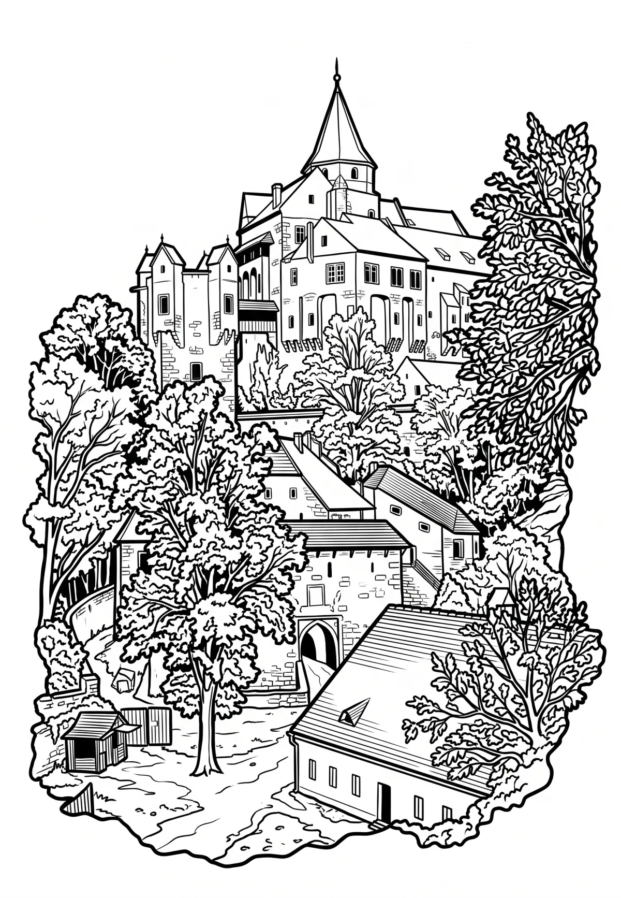

Hrad Pernštejn
Jihomoravský kraj · 490 m n. m.

historická památka · #024
Gotický hrad Pernštejn z poloviny 13. století stojí ve východním okraji Českomoravské vrchoviny, u osady Pernštejn, části městysu Nedvědice, který tvořil jeho podhradí. Stavba klasického raně gotického šlechtického hradu pánů z Pernštejna s jednoduchou bergfritovou dispozicí byla do 16.